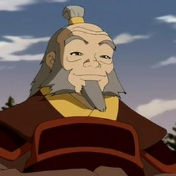

Characters 
Prins Zuko
Zuko is een bekwame Vuurmeester en de verbannen kroonprins van
de Vuurnatie. Hij was erop uit Aang, de lang verloren Avatar, te
vangen in zijn poging om zijn eer en recht op de troon te
herstellen. Hij wil zich bewijzen aan zijn vader, Vuurheer Ozai.
Hij wordt op zijn zoektocht vergezeld en geadviseerd door zijn
oom Iroh en later door de rest van team avatar.
Zuko's kenmerkende karaktertrek is een groot litteken op zijn
gezicht dat van zijn linkeroog naar zijn oor loopt. Zijn haar
was eerst afgeschoren op een kleine paardenstaart na. Nadat hij
deze had afgesneden als teken van zijn afscheiding van zijn
familie in de aflevering “De Avatar Trance”, liet Zuko zijn haar
gewoon groeien.
- Naam: Zuko
- Nationaliteit: Vuurnatie
- Geslacht: Man
- Kleur haar: Zwart/bruin
- Kleur ogen: Lichtbruin/geel
- Leeftijd: 16
- Eerste verschijning: De Jongen In De IJsberg
- Sturing(en): Vuur, Bliksem (alleen doorsturen)
- Wapen: Duozwaarden
Prinses Azula
Azula, een wonderkind op het gebied van vuursturen , was
manipulatief en geobsedeerd door macht. Ze was een ervaren
strateeg die de staatsgreep van de hoofdstad van het Aarderijk,
Ba Sing Se , orkestreerde en de invasie op de Dag van de Zwarte
Zon stopte .
Azula koesterde diepe mentale instabiliteit en geloofde dat haar
moeder meer van Zuko hield dan van haar. Azula, door haar vader
opgevoed in een omgeving zonder moederfiguur, moest in de ogen
van haar vader niets minder dan perfect zijn om genegenheid en
aandacht van hem te krijgen.
- Naam: Azula
- Nationaliteit: Vuurnatie
- Geslacht: Vrouw
- Kleur haar: Zwart/bruin
- Kleur ogen: Lichtbruin
- Leeftijd: 14
- Eerste verschijning: aflevering: De Storm Boek 1
-
Sturing(en): Blauw vuur en bliksemtechniek.
Oom Iroh
Iroh was een gepensioneerde Vuurnatie- generaal , een voormalige
kroonprins van de natie, een Grote Lotus van de Orde van de
Witte Lotus , [1] een vuurstuurmeester en een wijze mentor voor
zijn neef Zuko . [7] Hij was de oudste zoon van Vuurheer Azulon
en Ilah en de oudere broer van Ozai . [8] Iroh's bekende
vermogen om vuur te spuwen en zijn beweringen dat hij de laatste
draak "dode" leverden hem de eretitel "De Draak van het Westen"
op.
In tegenstelling tot veel andere individuen uit de Vuurnatie,
vooral degenen binnen zijn eigen familie, was Iroh een wijze,
gemakkelijke en spirituele man. Hij waardeerde en bewonderde de
balans van de vier elementen , en verwerkte zelfs aspecten van
de andere elementen in zijn eigen vuurstuurtechnieken. [11] Iroh
hielp Avatar Aang en zijn metgezellen bij verschillende
gelegenheden, en werd bijgevolg als verrader gebrandmerkt.
- Naam: Iroh
- Nationaliteit: Vuurnatie
- Geslacht: Man
- Kleur haar: Grijs
- Kleur ogen: Bruin
- Leeftijd: 56
- Eerste verschijning: De Jongen In De IJsberg
- Sturing(en): Vuur en bliksem techniek

Vuurheer Ozai
Ozai was een tiran en Vuurheer van de Vuurnatie. Hij was de
vader van prins Zuko en prinses Azula, en de hoofdvijand van
Avatar Aang. Ozai was net als alle andere Vuurheren een
vuurmeester en het werd gelooft dat hij één van de krachtigste
vuurstuurders was.
Net als zijn vader en grootvader, wilde Ozai de gehele wereld
veroveren en daarvan heerser worden. Hij plande om Sozins komeet
te gebruiken om het Aardrijk plat te branden en verklaarde
zichzelf tot Feniks koning, heerser over de wereld. Hij werd
verslagen door Avatar Aang,
- Naam: Ozai
- Nationaliteit: Vuurnatie
- Geslacht: Man
- Kleur haar: Zwart
- Kleur ogen: Goud
- Leeftijd: Ongeveer 45 jaar
- Eerste verschijning: Midwinter deel 2
- Sturing(en): Vuur en bliksem
Avatar Roku
Avatar Roku was een incarnatie van de Avatar de opvolger van
Avatar Kyoshi en de voorganger van Avatar Aang. Hij is geboren
en getogen in de Vuurnatie. Als een geest diende Roku als een
leidende kracht voor Aang in zijn periode na het ontwaken uit
het ijs. Roku was in het bezit van een dierlijke compagnon, een
rode draak genaamd Fang, die diende in vergelijkbare manieren
zoals Appa en Momo dat deden voor Aang.
Roku was een wijze Avatar met goede bedoelingen; hoewel hij zelf
toegaf dat hij besluiteloos was. Door Roku's oude vriendschap
met Vuurheer Sozin zorgde dit ervoor dat hij Sozins verlangen
naar oorlog niet kon stoppen waardoor dit leidde tot zijn dood.
Hij had hierdoor gefaald om de oorlog te stoppen die honderd
jaar zou duren.
- Naam: Roku
- Nationaliteit: Vuurnatie
- Geslacht: Man
- Kleur haar: Zwart/grijs
- Kleur ogen: Geel/lichtbruin
- Leeftijd: 112 jaar geleden overleden.
- Eerste verschijning: De Zuidelijke Luchttempel
- Sturing(en): Vuur, Aarde, Lucht, Water
Element Vuur
Vuursturen
Vuursturen , een van de vier elementaire buigkunsten , is het
pyrokinetische vermogen om vuur te beheersen en te produceren.
Het is uniek onder de buigkunsten, omdat het de enige is waarin
de uitvoerder het element kan genereren. De eerste menselijke
vuurstuurders leefden in een stad bovenop een leeuwenschildpad
tijdens het tijdperk van Raava en de kunst verspreidde zich
later naar de Sun Warriors , de Vuurnatie en de Verenigde
Republiek der Naties . [5] [6] Het Aarderijk kent ook een kleine
vuurstuurminderheid.
Zoals beschreven door Iroh , [1] is vuur het element van macht,
bestaande uit overweldigende kracht, getemperd door de
onwankelbare wil om taken en verlangens te volbrengen. Tijdens
de Honderdjarige Oorlog veranderde een militaristische Vuurnatie
dit echter in vuursturen, aangewakkerd door woede, haat en
woede. Vuursturen ontleent zijn kracht aan de zon, en de eerste
menselijke vuurstuurders ontleenden hun vuurstuurtechnieken aan
de draken .
Vuursturen staat bekend om zijn intense en agressieve
aanvalsstijl en het algemene gebrek aan adequate defensieve
bewegingen, hoewel vuurstuurders aanvallende manoeuvres kunnen
aanpassen om als verdediging te functioneren, zoals het creëren
van grote muren van vuur [2] of het neerschieten van inkomende
aanvallen met vuurstoten.
Oorsprong
Tijdens het tijdperk van Raava ontvingen mensen het element vuur
van de vuurleeuwschildpad die de bewaker van hun stad was, die
hen de kracht zou verlenen met energiesturen . Ze konden erom
vragen wanneer ze zich in de Spirit Wilds waagden en moesten het
teruggeven als ze terugkwamen. Wan stal echter de macht om zijn
leven en dat van zijn verarmde vrienden te verbeteren, maar werd
gevangengenomen en verbannen. Hij mocht de kracht van vuur
behouden om zichzelf te beschermen en raakte uiteindelijk
bevriend met de geesten. Als zodanig slaagde hij erin zijn
vaardigheden aan te scherpen door de juiste manier van buigen te
leren van de draken die in de Spirit Wilds leefden. Hij
ontwikkelde zijn stijl op zo'n manier dat zijn vuur een
verlengstuk van zijn lichaam werd, in plaats van slechts een
hulpmiddel voor bescherming zoals de anderen het zagen. Anderen
hoorden van zijn overleving en vertrokken ook met de kracht van
vuur naar de Spirit Wilds, omdat ze niet langer wilden leven
onder de slechte omstandigheden die ze in de stad hadden.
In de jaren daarna leerden mensen vuursturen van de draken die
ooit het land hadden bevolkt. De eerste mensen in het tijdperk
van de Avatar die van de draken leerden, waren de Zonstrijders,
die het verband begrepen tussen het vuur van hun ziel, het vuur
van de draken en de zon. In de overblijfselen van hun eens zo
grote beschaving ontdekten Zuko en Aang dat vuursturen energie
en leven vertegenwoordigt, een concept dat voor bijna alle
vuurstuurders verloren was gegaan in de Honderdjarige Oorlog. De
ware betekenis van vuursturen werd vergeten toen woede, woede en
een verlangen om te domineren de idealen van leven en energie
begonnen te vervangen, en hoe deze zich verbinden met de zon. De
koninklijke familie van de Vuurnatie moedigde dit aan om te
helpen bij de propaganda dat vuur kon worden gebruikt als een
instrument om te vernietigen en dat de Honderdjarige Oorlog
gerechtvaardigd was.
Vuurstuurders halen hun kracht uit de zon en andere
zonneobjecten, zoals kometen, en uit de vurige kern van de
planeet. [10] Een zonsverduistering heeft het potentieel om de
kracht van een vuurstuurder volledig teniet te doen, wat het
resultaat is van een directe verbinding tussen de zon en het
vuursturen. [11] Bovendien verklaarde Zuko , na het verslaan van
Katara bij zonsopgang tijdens de Belegering van het Noorden ,
dat zij opstond met de maan, maar hij steeg op met de zon,
waarmee hij verder verwees naar het belang van de zon voor
vuursturen. [12] Van vuurstuurders wordt ook gezegd dat ze
kracht putten uit vulkanische energie en bliksem.
Vechtstijl
Vuurstuurders gebruiken hun chi als bron voor hun buigingen. Dit
facet van vuursturen staat in schril contrast met de andere
buigkunsten, die reeds aanwezige bronnen van hun element
manipuleren, hoewel vuurstuurders ook vlammen in de buurt kunnen
beheersen of versterken.
Vuursturen maakt gebruik van geconcentreerde vuurstoten om
tegenstanders te overweldigen voordat ze een fatale slag
toebrengen. Snelle, wervelende trappen en stoten genereren
verschillende vormen voor aanvallende aanvallen. Deze strategie
maakt vuursturen waarschijnlijk het meest geschikt van alle
buigkunsten. De tactieken en vormen van vuursturen vereisten
weinig aanpassingen voor gebruik bij pro-buigen, het meest
opvallende verschil was de beperking op het gebruik van
langdurige vuurstromen. Niettemin zorgen snelle vlagen van
trappen en stoten ervoor dat een pro-buigende vuurstuurder
uitstekende mobiliteit in de arena behoudt en tegelijkertijd
probeert de leden van het andere team terug te duwen.
Cirkelvormige bewegingen zijn ook een cruciaal element voor de
vaardigheid, omdat het de vlammen van de vuurstuurder lijkt te
versterken en versterken. Bij het creëren van bliksem bewegen de
vuurstuurders hun armen vaak in langzame, cirkelvormige
bewegingen, vergelijkbaar met waterstuurders , maar met meer
spanning.